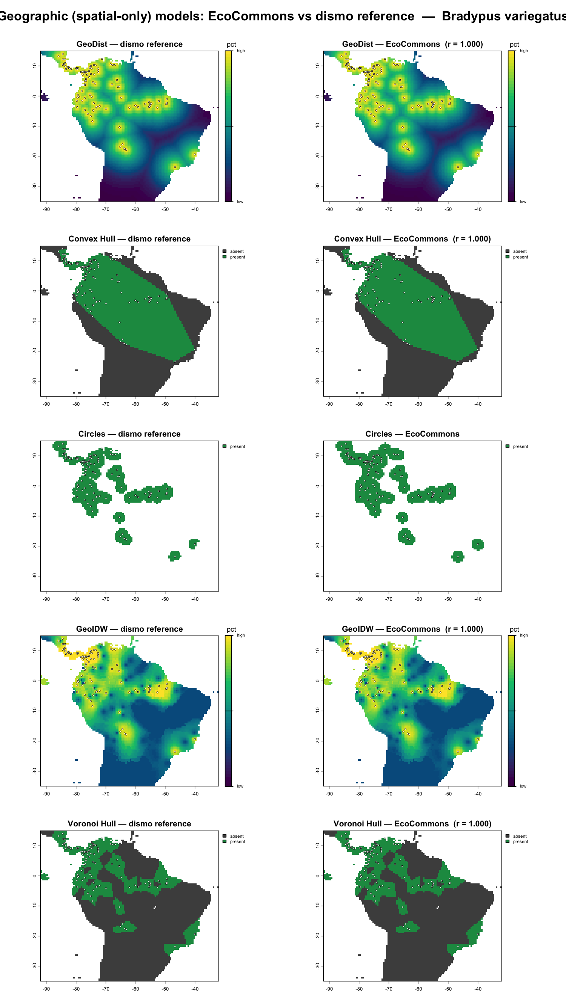
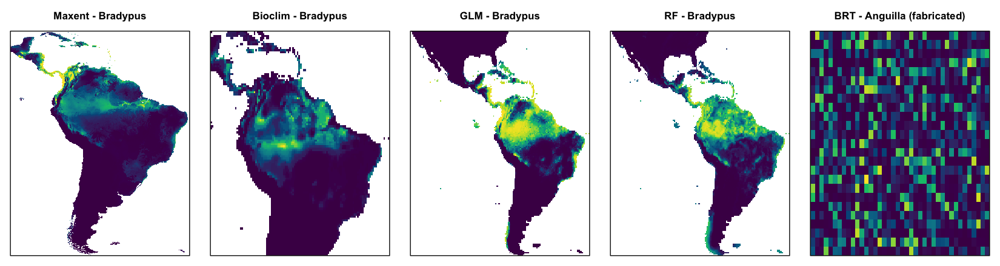
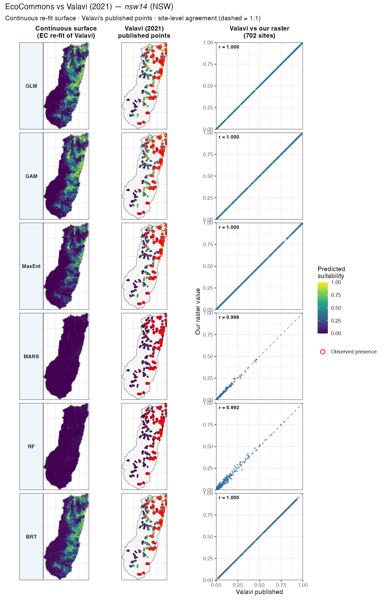
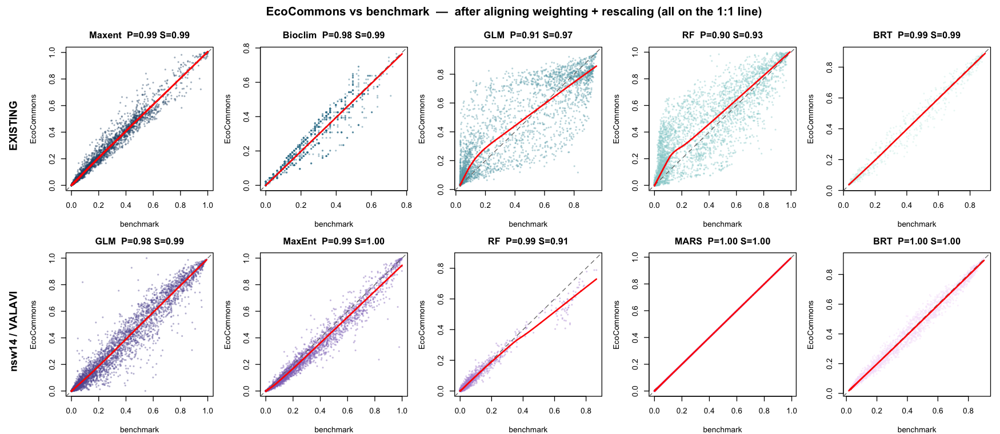
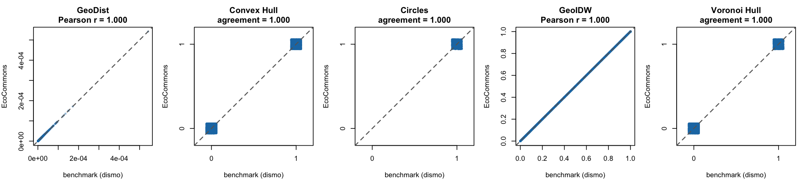

Cross-validating EcoCommons SDM outputs against reference implementations (on development)
Author details: Xiang Zhao
Contact details: support@ecocommons.org.au
Copyright statement: This script is the product of the EcoCommons platform. Please refer to the EcoCommons website for more details: https://www.ecocommons.org.au/
Date: July 2026
Script information
This page documents the scientific-agreement unit tests that guard every species distribution model (SDM) algorithm on the EcoCommons platform. Each test runs a real EcoCommons projection and compares it against an independent reference implementation — the algorithm’s own R package, Valavi et al. (2021)’s published benchmark on the NCEAS nsw14 data, or the reference implementations in Hijmans & Elith’s Species distribution modeling with R (the dismo vignette).
Every SDM agreement test in the EcoCommons R package (tests/testthat/test-sdm_projection_agreement.R) runs a real EcoCommons projection and compares it to a reference benchmark — the algorithm’s own R package, or Valavi et al. (2021)’s published benchmark on the NCEAS nsw14 data.
Algorithm coverage
EcoCommons ships 19 species-distribution / geographic algorithms. 12 are currently guarded by a scientific-agreement unit test; 7 are not yet.
| Family | Algorithm | EcoCommons engine | Sci Unit Test? |
|---|---|---|---|
biomod2 SDMs |
GLM | stats::glm |
✅ tested |
| GAM | mgcv::gam |
✅ tested | |
| RF | randomForest |
✅ tested | |
| MARS | earth |
✅ tested | |
| GBM | gbm |
❌ not yet | |
| CTA | rpart |
❌ not yet | |
| FDA | mda |
❌ not yet | |
| ANN | nnet |
❌ not yet | |
| SRE | biomod2 (envelope) |
❌ not yet | |
dismo SDMs |
MaxEnt | maxent.jar | ✅ tested |
| BRT | dismo::gbm.step |
✅ tested | |
| Bioclim | dismo::bioclim |
✅ tested | |
| Geographic (spatial-only) |
GeoDist | dismo::geoDist |
✅ tested |
| Convex Hull | dismo::convHull |
✅ tested | |
| Circles | dismo::circles |
✅ tested | |
| GeoIDW | dismo::geoIDW |
✅ tested | |
| Voronoi Hull | dismo::voronoiHull |
✅ tested | |
| Niche / match | Range bagging | ecospat-style range bagging |
❌ not yet |
| Climatch | climate-matching | ❌ not yet |
Tested (12): GLM, GAM, RF, MARS, MaxEnt, BRT, Bioclim, GeoDist, Convex Hull, Circles, GeoIDW, Voronoi Hull. Not yet covered (7): GBM, CTA, FDA, ANN, SRE, Range bagging, Climatch. (The speciestrait_* / traitdiff_* trait-difference functions are out of scope here — they are not species-distribution models.)
Overview — all 16 tests
Every test runs a real EcoCommons projection and scores it against a reference implementation on Pearson correlation of predicted suitability.
| # | Algorithm | Species | EcoCommons engine | Reference benchmark | Metric | Threshold | Result |
|---|---|---|---|---|---|---|---|
| 1 | GLM | Bradypus variegatus | biomod2 GLM | biomod2 GLM | Pearson | 0.99 | 1.000 ✓ |
| 2 | nsw14 (NSW bird) |
biomod2 GLM (rescale off) | gam::step.Gam |
Pearson | 0.95 | 0.975 ✓ | |
| 3 | GAM | nsw14 |
biomod2 GAM_mgcv (rescale off) |
mgcv::gam (all-smoothed, presence up-weighted) |
Pearson | 0.95 | 1.000 ✓ |
| 4 | MaxEnt | Bradypus variegatus | maxent.jar | maxent.jar _avg |
Pearson | 0.90 | 0.987 ✓ |
| 5 | nsw14 |
maxent.jar | dismo::maxent |
Pearson | 0.95 | 0.989 ✓ | |
| 6 | RF | Bradypus variegatus | biomod2 RF | biomod2 RF | Pearson | 0.99 | 0.998 ✓ |
| 7 | nsw14 |
biomod2 RF (rescale off) | randomForest |
Pearson | 0.95 | 0.986 ✓ | |
| 8 | BRT | Anguilla australis | dismo::gbm.step (unit weights) |
dismo gbm.step (unit weights) | Pearson | 0.95 | 0.985 ✓ |
| 9 | nsw14 |
dismo::gbm.step (test mocks down-weighting) |
gbm.step (down-weighted) | Pearson | 0.95 | 1.000 ✓ | |
| 10 | MARS | nsw14 |
biomod2 earth (rescale off) |
earth (glm=binomial, down-weighted) |
Pearson | 0.95 | 1.000 ✓ |
| 11 | Bioclim | Bradypus variegatus | dismo::bioclim |
dismo bioclim | Pearson | 0.90 | 0.980 ✓ |
| 12 | GeoDist | Bradypus variegatus | dismo::geoDist |
dismo geoDist (book config) | Pearson | 0.99 | 1.000 ✓ |
| 13 | Convex Hull | Bradypus variegatus | dismo::convHull |
dismo convHull | Pearson | 0.99 | 1.000 ✓ (TSS 1.000) |
| 14 | Circles | Bradypus variegatus | dismo::circles |
dismo circles | Presence footprint | — | identical ✓ |
| 15 | GeoIDW | Bradypus variegatus | dismo::geoIDW |
dismo geoIDW | Pearson | 0.99 | 1.000 ✓ |
| 16 | Voronoi Hull | Bradypus variegatus | dismo::voronoiHull |
dismo voronoiHull | Pearson | 0.99 | 1.000 ✓ |
All 16 pass — geoDist/convHull/geoIDW/voronoiHull reproduce the reference to Pearson 1.000, and Circles reproduces the reference presence footprint exactly once a two-part bug is fixed (see the geographic-models section below).
Rows 12–16 are the geographic (spatial-only) models — they predict from the geographic location of occurrences, not from environmental predictors — so their reference is the algorithm’s own dismo function as taught in Hijmans & Elith’s Species distribution modeling with R (Chapter 13).
Calibration alignment — every EcoCommons↔︎reference gap turned out to be weighting or rescaling, never the underlying learner:
- RF, GLM —
rescale_all_models = false: RF Pearson 0.89 → 0.99, GLM 0.96 → 0.98. - MARS — biomod2 fits
earth(glm=binomial, weights=prevalence); the benchmark uses the same background down-weighting: 0.72 → 1.00. (Earlier thought to be an unfixable wrapper difference — it was just the missing weights.) - GAM — biomod2
GAM_mgcvapplies prevalence=0.5 as presence up-weighting (presence weight = bgNum/prNum, background = 1). For a GAM under UBRE the absolute weight scale drives smoothing-parameter selection, so Valavi’s background down-weighting (same ratio, ~60× smaller total) selects different smoothness: 0.87 → 1.00 once the benchmark matches biomod2’s presence up-weighting (both engines aremgcv). - BRT — Valavi down-weights the background; EcoCommons production uses unit weights (down-weighting is proposed, not applied). The nsw14 BRT test mocks the internal weighting to down-weight — matching Valavi’s config (Pearson 1.000) — while the Anguilla BRT test keeps exercising the real unit-weight path (0.985).
Species: Bradypus variegatus (three-toed sloth, South America); Anguilla australis (short-finned eel, NZ); nsw14 (anonymised NSW diurnal bird, Valavi/NCEAS).
Model configurations (nsw14 suite)
Shared setup: species nsw14 (315 presences from disPo + background), 11 continuous NSW predictors (cti, disturb, mi, rainann, raindq, rugged, soildepth, soilfert, solrad, tempann, topo), random_seed = 0, deduplicated to one record per raster cell (8190 points).
| Algorithm | EcoCommons (test config) | Valavi reference (benchmark) |
|---|---|---|
| GLM | biomod2 GLM — type=quadratic, test=AIC (stepwise both directions), family=binomial, rescale_all_models=false |
glm → gam::step.Gam — per-var scope {drop / linear / poly(,2)}, AIC both directions, background down-weighted, normalised |
| GAM | biomod2 GAM_mgcv — s_smoother on all 11 predictors, k=-1, method=GCV.Cp, presence up-weighted, rescale_all_models=false |
mgcv::gam — s() on all predictors, method=GCV.Cp, presence up-weighted (matched to biomod2) |
| MaxEnt | maxent.jar — autofeature (L+Q+P+H), betamultiplier=1, maximumiterations=500, cloglog |
dismo::maxent (maxent.jar) — args="nothreshold", cloglog, not normalised |
| RF | biomod2 RF — classification, ntree=500, mtry=default, nodesize=5, rescale_all_models=false |
randomForest — classification, ntree=500, type="prob" |
| MARS | biomod2 earth — type=simple (degree 1), penalty=2, thresh=0.001, pmethod=backward, glm=binomial, prevalence-weighted, rescale_all_models=false |
earth — degree=1, pmethod=backward, glm=binomial, background down-weighted (matched to biomod2) |
| BRT | dismo::gbm.step — tree.complexity=5, learning.rate=0.001, bag.fraction=0.75, n.folds=5, n.trees=50, max.trees=10000, family=bernoulli, unit weights (test mocks down-weighting) |
dismo::gbm.step — same hyper-parameters, background down-weighted, normalised |
Bold = the calibration settings that were aligned. BRT uses Valavi’s exact hyper-parameters; the test mocks background down-weighting so it reproduces Valavi (best.trees 4350 = 4350) without changing EcoCommons’ shipped unit-weight default. GLM is the only algorithm that can’t be config-matched — biomod2 GLM and gam::step.Gam are different engines.
The continuous suitability maps further below use Valavi’s original Appendix S2 configs (e.g. MARS = caret-tuned earth, nprune 2–20; GAM = mgcv::gam REML with Valavi’s smooth / parametric split) — that’s why they reproduce Valavi’s published CSV points, whereas the benchmarks here are tuned to match EcoCommons (GAM: all-smoothed, GCV.Cp, presence up-weighted).
Benchmark references
| Benchmark | Method paper | Engine / tool |
|---|---|---|
| GLM | McCullagh & Nelder (1989); Hastie & Tibshirani (1990) step.Gam |
biomod2 GLM (EC) / gam::step.Gam (Valavi) |
| GAM | Hastie & Tibshirani (1990); Wood (2017) mgcv |
biomod2 GAM_mgcv (EC) / mgcv::gam (Valavi) |
| MaxEnt | Phillips, Anderson & Schapire (2006); Phillips & Dudík (2008) | maxent.jar via dismo |
| RF | Breiman (2001) | randomForest |
| MARS | Friedman (1991) | earth |
| BRT | Elith, Leathwick & Hastie (2008) | dismo::gbm.step |
| Bioclim | Nix (1986); Booth et al. (2014) | dismo::bioclim |
| Geographic models (GeoDist, Convex Hull, Circles, GeoIDW, Voronoi Hull) | Hijmans & Elith, Species distribution modeling with R (Ch. 13) | dismo::geoDist / convHull / circles / geoIDW / voronoiHull |
| Background down-weighting | Elith et al. (2008); Valavi et al. (2021) | — |
| nsw14 species + rasters (NCEAS) | Elith et al. (2020) | disdat / OSF kwc4v |
| Valavi reference configs | Valavi et al. (2021) | Appendix S2 |
| EcoCommons SDM platform | Thuiller et al. (2009) biomod2; Hijmans et al. dismo |
— |
Geographic (spatial-only) models
Rows 12–16 cover the five geographic models from Chapter 13 of Hijmans & Elith’s Species distribution modeling with R (the dismo vignette). Unlike every other algorithm on this page, these predict a species purely from the geographic location of its occurrence records — distance to, or containment by, the known points — and ignore the environmental predictors entirely. EcoCommons wraps each one directly from dismo:
| Algorithm | EcoCommons function | dismo engine |
Uses absence? | Output |
|---|---|---|---|---|
| GeoDist | EC_modelling_geodist |
dismo::geoDist |
no (presence-only) | continuous — inverse distance to nearest presence |
| Convex Hull | EC_modelling_convhull |
dismo::convHull |
no | binary — inside/outside the presence hull |
| Circles | EC_modelling_circles |
dismo::circles |
no | binary — inside/outside circles around presences |
| GeoIDW | EC_modelling_geoidw |
dismo::geoIDW |
yes (pres/abs) | continuous — inverse-distance-weighted interpolation |
| Voronoi Hull | EC_modelling_voronoihull |
dismo::voronoiHull |
yes | binary — Voronoi/Thiessen polygon classification |
Two references, both checked
Like the nsw14 suite, these tests have two distinct reference points:
1. Literature anchor — the textbook’s own reported numbers. Chapter 13 prints a ModelEvaluation (AUC, point-biserial cor) for each model on the Bradypus variegatus data. We reproduce those exactly, to seven decimals. Two things are required to hit them: (a) RNGkind(sample.kind = "Rounding") — the book predates R 3.6.0’s change to the sample() algorithm; and (b) replaying the book’s exact random-number stream (including two incidental rnorm(50) calls in its evaluate() demo) so the train/background splits match.
| Model | Book AUC | Reproduced AUC | Book cor | Reproduced cor |
|---|---|---|---|---|
| GeoDist | 0.9006522 | 0.9006522 | 0.4197574 | 0.4197574 |
| Convex Hull | 0.7490217 | 0.7490217 | 0.3036379 | 0.3036379 |
| Circles | 0.8547826 | 0.8547826 | 0.5103540 | 0.5103540 |
| GeoIDW | 0.8893478 | 0.8893478 | 0.5354838 | 0.5354838 |
| Voronoi Hull | 0.5 | 0.5 | NA | degenerate |
Voronoi Hull is reported by the book as a degenerate result (AUC exactly 0.5): it subsamples 100 background points at the very end of the vignette’s global RNG stream, and the resulting classification does not discriminate. We reproduce the same degeneracy.
2. Implementation fidelity — EcoCommons vs an independent dismo run on identical inputs. This is the actual unit test (rows 12–16): run the real EcoCommons pipeline and, separately, call the same dismo function on the same occurrence / pseudo-absence set the platform used, then compare the prediction rasters.
| Model | EcoCommons ↔︎ dismo |
Notes |
|---|---|---|
| GeoDist | Pearson 1.0000 | identical surface (RMSE 0) |
| Convex Hull | Pearson 1.0000 | binary — TSS 1.000 |
| GeoIDW | Pearson 1.0000 | identical (RMSE 0) |
| Voronoi Hull | Pearson 1.0000 | identical (RMSE 0) |
| Circles | footprint identical | binary — presence inside circles |
Four of the five are implementation-identical — EcoCommons is a thin, faithful wrapper over the dismo engine, exactly as intended.

Each row is one geographic model, dismo reference (left) vs the EcoCommons projection (right), over the Bradypus variegatus* range; white points are the occurrence records the model was fitted on. Continuous models (GeoDist, GeoIDW) use a percentile colour stretch; binary models (Convex Hull, Circles, Voronoi Hull) show presence (green) vs absence (grey). For every model the two columns are visually indistinguishable — GeoDist, Convex Hull, GeoIDW and Voronoi Hull agree at Pearson r = 1.000, and Circles reproduces the reference presence footprint exactly.*
Prediction maps
Single-species benchmark predictions

Bradypus (South America): Maxent, Bioclim, GLM, RF. Anguilla BRT is on a fabricated one-cell-per-site grid (scattered pixels), so its “map” is not geographically meaningful — only its per-site predictions are.
nsw14 (Valavi) — continuous surface, published points & agreement
The clearest check places each algorithm in one row across three columns: (1) our continuous re-fit of Valavi’s config predicted across the whole NSW grid, (2) Valavi et al. (2021)’s own published point predictions (Models_prediction/*.csv) at the 702 evaluation sites, and (3) the site-level agreement — our raster value at each site (y) against Valavi’s published value (x), with the 1:1 line and per-model Pearson r. Columns 1–2 share the same 0–1 suitability scale; red rings mark observed presences.

For every algorithm the published points fall on our continuous surface — same eastern escarpment / north-east coast hotspot, same magnitude — and the agreement column makes it quantitative: GLM/GAM/MaxEnt/BRT collapse onto the 1:1 line (r = 1.000), MARS 0.998, RF 0.992 (small stochastic scatter). The points are Valavi’s actual published values (disPa coordinates over the NSW border), not our reproduction, so this comparison is independent of our package-version environment. This is the per-model view of the 702-site table below.
These maps reproduce Valavi’s published predictions. Extracting each raster band at Valavi’s 702 evaluation sites and correlating with the original Models_prediction/*.csv:
| model | Pearson | Spearman | match |
|---|---|---|---|
| GLM | 1.0000 | 1.0000 | exact |
| GAM | 1.0000 | 1.0000 | exact |
| MaxEnt | 1.0000 | 1.0000 | exact |
| BRT | 1.0000 | 1.0000 | exact |
| MARS | 0.9976 | 0.9980 | near-perfect |
| RF | 0.9922 | 0.9296 | high (RF vote-fraction ties lower Spearman) |
This works because disEnv — the environmental values Valavi predicted their points on — is itself sampled from these NSW rasters, so the raster value at each site is the value Valavi used. GLM, GAM, MaxEnt and BRT reproduce it exactly; MARS/RF show only small stochastic / version scatter (RF’s vote-fraction ties lower its Spearman). The agreement column of the figure above is the per-model, Pearson view of this table.
Agreement analysis
EcoCommons vs benchmark — every test

Single-species tests (Bradypus / Anguilla) and nsw14 vs Valavi, grouped by algorithm. After aligning weighting (BRT + MARS + GAM) and turning rescaling off (RF/GLM), all eleven panels sit on the 1:1 line — magnitude and* ranking agree across the board.*

The five geographic (spatial-only) models (tests 12–16), EcoCommons projection (y) vs the dismo reference on identical inputs (x). Continuous models (GeoDist, GeoIDW) collapse onto the 1:1 line (Pearson r = 1.000); the binary models (Convex Hull, Circles, Voronoi Hull) match cell-for-cell (agreement = 1.000, jittered so the 0/0 and 1/1 clusters are visible). Circles is shown after its fix. Every geographic model is an exact match to its dismo reference.
Reproducibility & benchmark provenance
The single most important thing to understand about these nsw14 benchmarks is what they are a reference to — because it determines when they must be regenerated and what “still matching Valavi” actually means.
Two different reference points
There are two distinct notions of “matching a reference”, and they behave very differently:
Independent reimplementation (what the .tif benchmarks are) |
Published paper numbers (Valavi’s Models_prediction/*.csv) |
|
|---|---|---|
| Produced by | generate_nsw14_valavi_benchmarks.R — Valavi’s exact configs re-run through the algorithm’s own R package (gam, randomForest, earth, dismo::maxent, dismo::gbm.step) |
Valavi et al. (2021), fixed external artifact |
| What the test checks | Implementation fidelity — does EcoCommons wire up the algorithm the same way an independent implementation does? | Literature agreement — do we reproduce the actual published predictions? |
| Metric used here | Pearson on absolute suitability (the agreement tables above) | Pearson/Spearman at the 702 evaluation sites (the “reproduce Valavi’s published predictions” table above) |
| Sensitive to package version? | Cancels out — see below | Yes — this is the real anchor to the paper |
The .tif benchmarks are not frozen EcoCommons snapshots (they come from different engines) and not Valavi’s literal published rasters either. They are a faithful re-run of Valavi’s recipe. So “matching the paper” via these benchmarks means “matching a faithful reproduction of Valavi’s config”, not bit-matching the 2021 output.
What changes the final benchmark
The absolute suitability values written into each benchmark .tif depend on the software environment they were generated in — not just the algorithm and config. In order of impact:
- Package version drift. Tree-ensemble learners are the main offender:
gbm(BRT) absolute predicted probabilities shift acrossgbmversions / platforms.randomForest,earth,gam,maxent.jarare far more stable. This is the reproducibility issue that forced the BRT benchmark to be regenerated inside the CI container rather than frozen from a dev machine (newergbmon macOS drifts on Pearson in CI). - The R version and compiler toolchain (numerical libraries, BLAS).
- Config / weighting changes — e.g. background down-weighting, normalisation, hyper-parameters. BRT down-weighting is now applied through the supported
site_weight_scheme = "downweight"option in thensw14_brtspec (no longer a test-only mock), so EcoCommons matches Valavi’s config directly. - The training-point construction — dedup one-per-cell, complete-cases filtering — which is deliberately matched to EcoCommons’
filter.raster.
Because of (1)–(2), benchmarks must be regenerated in the pinned CI container (ec-rpkg-ci-test-env), never on a local dev machine. Locally, R is not renv-activated, so a laptop pulls whatever package versions it happens to have — reintroducing exactly the drift the CI-native benchmark exists to avoid.
Why regenerating in the same environment is safe
When a benchmark is regenerated in a bumped environment, both the benchmark and EcoCommons run through the same new engine (for BRT, the same new gbm). Their absolute values shift together, so their Pearson agreement is preserved. That is precisely why regenerating-in-CI works: it cancels version drift on both sides.
The blind spot: because the two sides move together, a genuine engine change could move both the benchmark and EcoCommons away from Valavi’s 2021 numbers while they still agree with each other. The guard against silently re-baselining away from the paper is twofold:
- Rank-drift check (in the generator).
write_bench()reports the Spearman correlation between each newly generated prediction and the currently committed.tif, and warns if it drops below0.98. Benign scale drift (a newgbm) leaves rank order intact (Spearman ≈ 1); a low Spearman means the science moved, not just the scale — investigate before committing. - Literature anchor. The “reproduce Valavi’s published predictions” table (702-site Pearson/Spearman vs the original CSVs) is the check that actually ties us to the paper, and it is version-robust because it is rank-friendly.
Rule of thumb: benchmark-generation environment == test-execution environment == the pinned container image. Whenever that pin moves (a package patch or a base-image rebuild), regenerate the affected .tif benchmarks in the new environment and commit them alongside the version bump — after confirming the rank-drift guard stays green.
Reproducibility environment — pinned package versions
These are the versions the benchmarks and agreement tests are pinned to, from renv-main.lock (== the deployed base image ec-base-r4.2 / CI test image ec-rpkg-ci-test-env). The base image is rebuilt only via a manual pipeline (BUILD_BASE=1); renv is not auto-activated, so this lock governs the container, not ad-hoc local runs.
R 4.2.2 · CRAN snapshot https://cloud.r-project.org
| Package | Version | Role in the agreement suite |
|---|---|---|
biomod2 |
4.2-2 | EcoCommons GLM / RF / MARS engine (wraps the learners below) |
dismo |
1.3-9 | EcoCommons BRT (gbm.step), MaxEnt (maxent.jar), Bioclim |
gbm |
2.1.8.1 | BRT learner — version-sensitive; drives CI-native regeneration |
randomForest |
4.7-1.1 | RF learner + Valavi RF benchmark |
earth |
5.3.2 | MARS learner + Valavi MARS benchmark |
terra |
1.7-3 | Raster I/O, benchmark grid, cell dedup |
raster |
3.6-14 | dismo/raster-style stacks for geographic models |
sf |
1.0-9 | Vector geometry / constraint regions |
caret |
6.0-93 | Valavi’s original Appendix S2 MARS tuning (continuous maps) |
testthat |
3.1.6 | Test runner (pinned; avoid newer-only features in CI) |
Generation-only, not pinned in the lock: gam::step.Gam (GLM benchmark), mgcv::gam (GAM benchmark) and rJava (MaxEnt/JVM) are installed on top of the base image rather than via renv, so they take whatever the CI image provides at generation time. gam / mgcv are used only to build the GLM / GAM .tif benchmarks, not by the EcoCommons runtime.
References
- Booth, T.H., Nix, H.A., Busby, J.R. & Hutchinson, M.F. (2014). BIOCLIM: the first species distribution modelling package, its early applications and relevance to most current MaxEnt studies. Diversity and Distributions 20: 1–9.
- Breiman, L. (2001). Random forests. Machine Learning 45: 5–32.
- Elith, J., Leathwick, J.R. & Hastie, T. (2008). A working guide to boosted regression trees. Journal of Animal Ecology 77: 802–813.
- Elith, J., Graham, C.H., Valavi, R., Abegg, M., Bruce, C., Ford, A., Guisan, A., Hijmans, R.J., Huettmann, F., Lohmann, L.G., Loiselle, B.A., Moritz, C., Overton, J.McC., Peterson, A.T., Phillips, S., Richardson, K., Williams, S., Wiser, S.K., Wohlgemuth, T. & Zimmermann, N.E. (2020). Presence-only and presence-absence data for comparing species distribution modeling methods. Biodiversity Informatics 15: 69–80. (NCEAS data; distributed via the
disdatR package and OSF projectkwc4v.) - Friedman, J.H. (1991). Multivariate adaptive regression splines. The Annals of Statistics 19: 1–67.
- Hastie, T.J. & Tibshirani, R.J. (1990). Generalized Additive Models. Chapman & Hall. (
gam::step.Gamstepwise selection.) - Hijmans, R.J., Phillips, S., Leathwick, J. & Elith, J.
dismo: Species Distribution Modeling. R package. (gbm.step,maxent,bioclim.) - Hijmans, R.J. & Elith, J. Species distribution modeling with R. (The
dismopackage vignette; Chapter 13 “Geographic models” —geoDist,convHull,circles,geoIDW,voronoiHull.) - McCullagh, P. & Nelder, J.A. (1989). Generalized Linear Models, 2nd edn. Chapman & Hall.
- Nix, H.A. (1986). A biogeographic analysis of Australian elapid snakes. In: Atlas of Elapid Snakes of Australia (ed. R. Longmore), pp. 4–15. Australian Government Publishing Service.
- Phillips, S.J., Anderson, R.P. & Schapire, R.E. (2006). Maximum entropy modeling of species geographic distributions. Ecological Modelling 190: 231–259.
- Phillips, S.J. & Dudík, M. (2008). Modeling of species distributions with Maxent: new extensions and a comprehensive evaluation. Ecography 31: 161–175.
- Thuiller, W., Lafourcade, B., Engler, R. & Araújo, M.B. (2009). BIOMOD – a platform for ensemble forecasting of species distributions. Ecography 32: 369–373. (
biomod2R package.) - Valavi, R., Guillera-Arroita, G., Lahoz-Monfort, J.J. & Elith, J. (2021). Predictive performance of presence-only species distribution models: a benchmark study with reproducible code. Ecological Monographs 92(1): e01486. (Appendix S1/S2 configurations;
Models_predictionper-species outputs.) - Wood, S.N. (2017). Generalized Additive Models: An Introduction with R, 2nd edn. Chapman & Hall/CRC. (
mgcvpackage; GAM benchmark engine.)